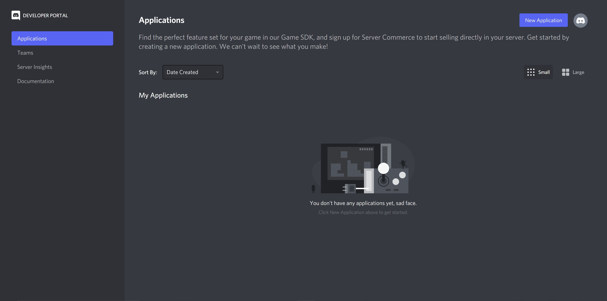
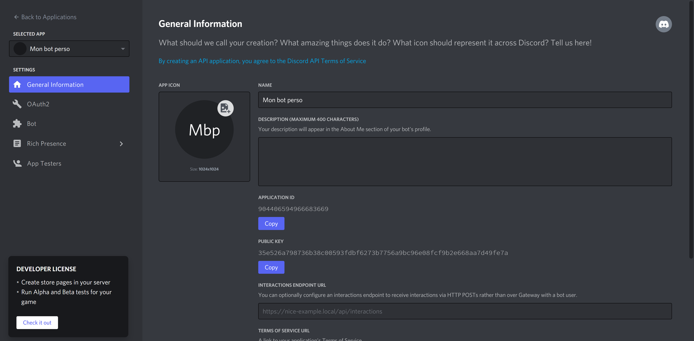

How to Create a Token for Your Bot?
A token is a string of characters that allows you to connect to a Discord bot. Each bot has its own token, which is like its password. To have a private and customized bot, you'll need to create your own token. Think of it as the bot's account, which enables it to interact with you and your server.
To create this token, go to the
Discord Developer portal. If you're going to Discord in your browser for the first
time, you'll need to log in with your Discord account. You
will then arrive at a page showing the list of applications
you have created. In our case, there are none. So, we need
to create one. To do that, simply click on the
New Application
button at the top right. You will then be asked for a name
for your application; put the name you want to give to your
bot, but don't worry, you can always change it later.


You will then arrive at the configuration page of your
application. Here, you can change the name and profile
picture of your application. You can also provide a
description; this description will appear on your bot's
profile in a special "About Me" field. The different
information below will not be useful to us. Now, we can
create our bot (finally!). To do that, go to the
Bot tab on the left side of the screen (if
you're on a mobile device, you may need to click on the
button at the top left to bring up the list of tabs.
Now, you need to press the
Add Bot button at
the top right to turn your application into a bot. The bot's
configuration page will appear. Just like earlier for the
application, you can change its name and profile picture.
Attention! If you want to later change your
bot's profile, you'll need to make the modifications here,
not in the first General Information tab.
Changes in the General Information tab are only
visible on the bot's invitation link, not on its profile.


Finally, to complete the configuration of your token, go
just below the profile configuration. You can see 5 options
to check. By default, only the first one is activated. You
also need to activate the bottom 3 options to allow your bot
to receive all of Discord's information. Don't activate the
2nd one, it would block your bot's invitations. So, you
should end up with all the boxes checked except the 2nd one
(see image). And don't forget to click the
Save Changes button at the bottom to save your
changes! After that, all you have to do is click the
Reset Token button just below your bot's name,
at the top, just above the checkmark options. Confirm, and
your token will be displayed. But be careful,
you should not show this token to anyone except your
developer!
Someone with access to your token could connect to your bot
and use it harmfully. If you accidentally give this token to
someone, you can click the Reset Token button
again to change it, but that would disconnect your bot. You
would then need to give the new token to your developer for
them to update it on their end.
And there you have it, you've learned how to create a token for your bot. Remember that anyone with this token can connect to the bot and use it, so be very cautious with it, and if you have any security concerns, contact your developer as soon as possible, they can provide guidance.